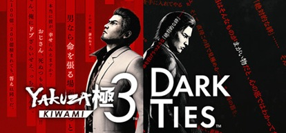

El lanzamiento de Yakuza Kiwami 3 & Dark Ties en febrero de 2026 ha supuesto la redención definitiva para uno de los capítulos más injustamente tratados de la saga, logrando un equilibrio brillante entre la nostalgia y la tecnología moderna. El remake de la aventura de Kiryu en Okinawa brilla gracias a la implementación total del Dragon Engine, que elimina por fin el frustrante sistema de bloqueos infinitos de la IA original para ofrecer un combate dinámico, agresivo y visualmente impactante. El verdadero golpe de autoridad lo da Dark Ties, esa expansión independiente centrada en Yoshitaka Mine que funciona como una precuela y complemento narrativo esencial; manejar a un Mine más técnico y brutal mientras descubrimos su ascenso al poder en el clan Tojo añade una capa de tragedia y complejidad que hace que el desenlace de la historia principal impacte con mucha más fuerza.